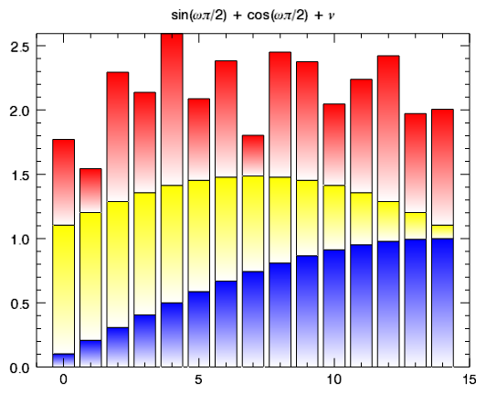
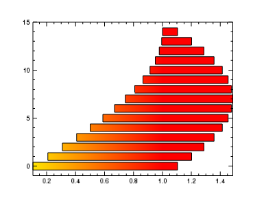

; Define the data set.
data1 = SIN((FINDGEN(15)+1)/15*!PI/2)
data2 = data1 + COS((FINDGEN(15))/15*!PI/2)
data3 = data2 + 0.25 + RANDOMU(1,15)
; Plot three bars, stacked.
b1 = BARPLOT(data1, BOTTOM_COLOR="white")
b2 = BARPLOT(data2, BOTTOM_VALUES=data1, $
FILL_COLOR='yellow', BOTTOM_COLOR="white", /OVERPLOT)
b3 = BARPLOT(data3, BOTTOM_VALUES=data2, $
FILL_COLOR='red', BOTTOM_COLOR="white", /OVERPLOT)
; Add a title.
b1.TITLE='$sin(\omega\pi/2) + cos(\omega\pi/2) + \nu$'

; Define the data.
data1 = SIN((FINDGEN(15)+1)/15*!PI/2)
bottom = data1+COS((FINDGEN(15))/15*!PI/2)
; Draw the barplot.
b = BARPLOT(data1, BOTTOM_VALUES=bottom, FILL_COLOR='red',$
BOTTOM_COLOR='yellow', C_RANGE=[0,1], /HORIZONTAL)